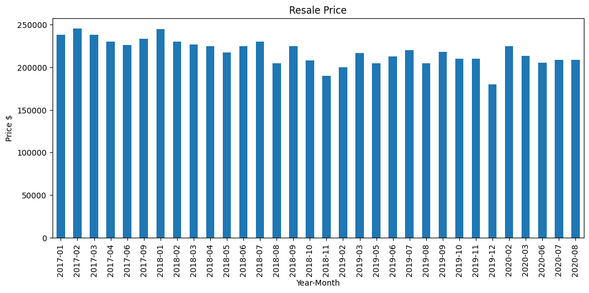
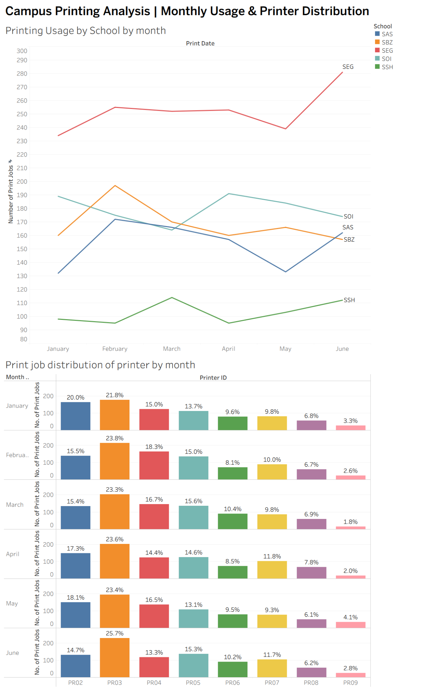
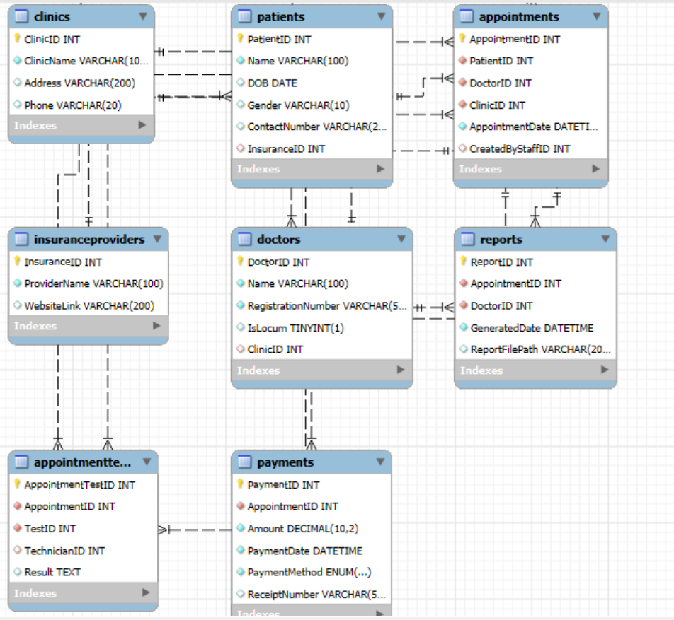
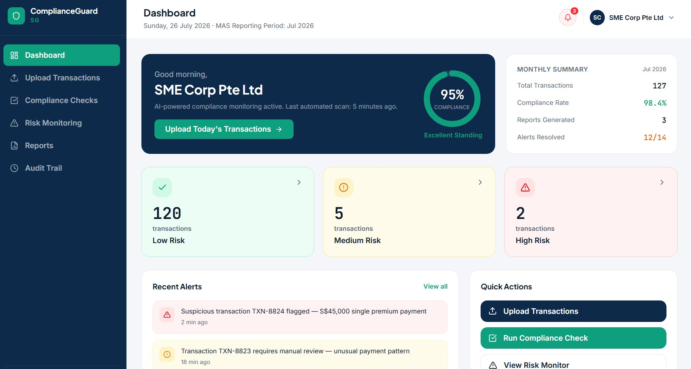
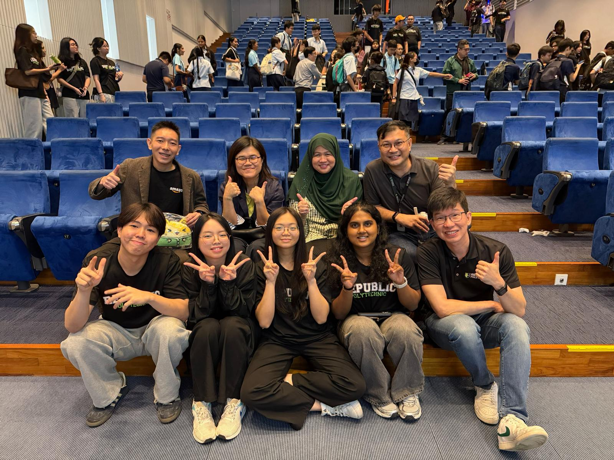
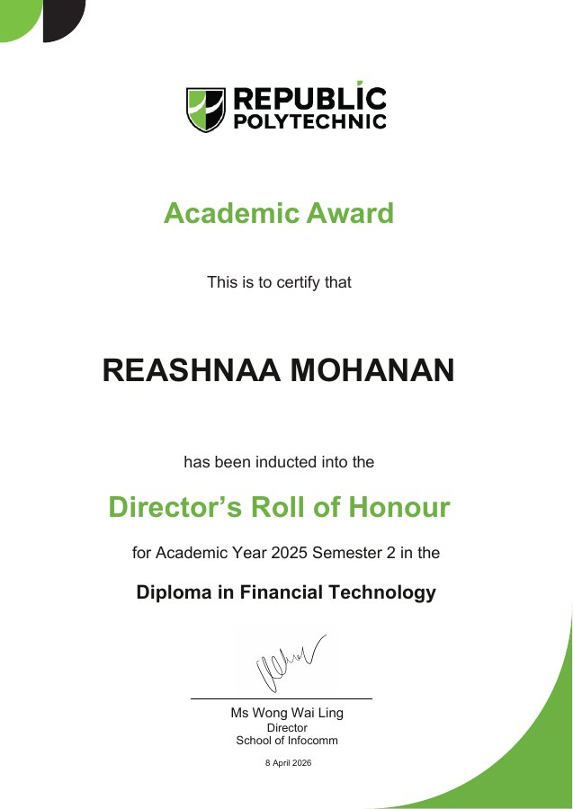
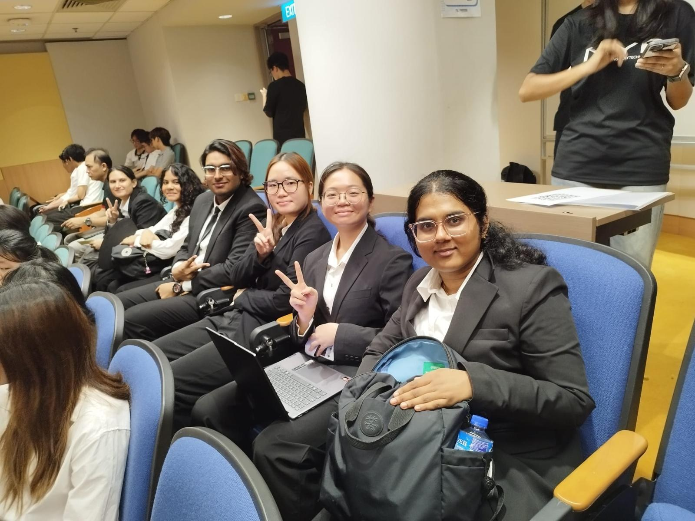
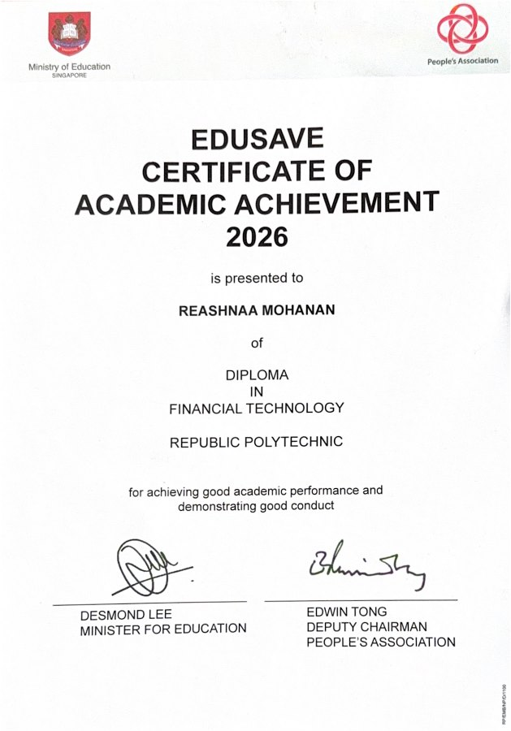
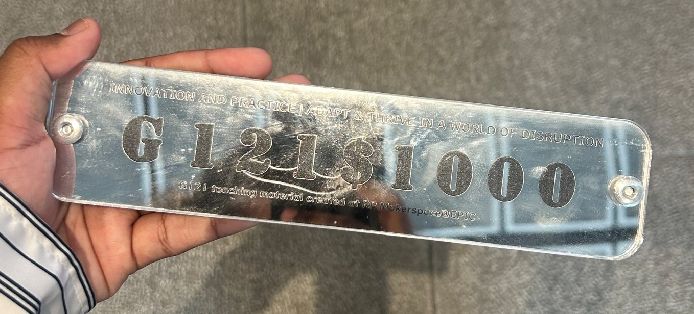

Programming & Web Development
Python · HTML · CSS · JavaScript (Basic)
Finance. Technology. Innovation.
Exploring how technology, data and new ideas can shape the future of financial services.
Hi! I'm Reashnaa, a Year 2 Financial Technology student at Republic Polytechnic, Singapore.
What interests me most about FinTech is how technology can change the way we manage money, make decisions and interact with financial services. I'm especially interested in banking, data analytics and AI, and I enjoy exploring these areas beyond the classroom.
Some of my most memorable learning experiences have come from projects, hackathons and leadership roles. They've challenged me to work with different people, think creatively and turn ideas into something meaningful.
As I continue my diploma journey, I'm looking forward to gaining industry experience and building on what I've learned.
Tools and concepts I've encountered through coursework, projects and hands-on learning.
Python · HTML · CSS · JavaScript (Basic)
SQL · Tableau (Fundamentals) · Microsoft Excel (Fundamentals) · MySQL
Banking Operations Fundamentals · AML/CFT · KYC/CDD · Credit & Operational Risk Fundamentals
CIA Triad · PDPA & Data Protection · Risk Assessment · Access Control · Encryption & Hashing (Fundamentals)
Prompt Engineering · Retrieval-Augmented Generation (RAG) · Botpress · n8n (Fundamentals) · Microsoft Power Automate (Basic)
SDLC · Agile/Scrum · Requirements Analysis
Figma · Miro · Microsoft PowerPoint · Canva
Selected coursework projects from my Financial Technology diploma, featuring data analysis, visualisation, database design and web development.
HDB Resale Price Analysis — used Python and Pandas to clean a resale transaction dataset and compare average monthly prices for a selected flat type and town.

My Tableau coursework project: a dashboard analysing 5,140 campus print jobs across schools and printers, using data from January to June 2025.

Designed an entity relationship diagram from a lecturer-provided diagnostic laboratory scenario, modelling appointments, patients, doctors, tests and payments with lecturer guidance.

My Software Application Development assessment: a study-management web app for tracking sessions, to-do tasks and learning goals, built with Node.js, Express and EJS.

Designed an interactive RegTech prototype for insurance SMEs, illustrating transaction monitoring, compliance checks, risk assessment and reporting.

Individual Final Assessment · Grade A
Explore RegTech projectSelected projects I've contributed to through teamwork, research and problem-solving.
An AI assistant prototype designed to help insurance representatives find relevant product information and explain complex terms during client conversations.
Customer Experience Category Finalist · Singapore College of Insurance
View full case study ↗A physical smart-glasses mock-up and companion app concept exploring ways to help students with ADHD reduce study distractions.
Silver Medallion · Team Lead
View full case study ↗Student Organising Committee · Republic Polytechnic School of Infocomm
Tech Saves the Day was a game- and escape room-based event by Republic Polytechnic’s School of Infocomm, introducing secondary school students to technology through interactive puzzles, challenges and activities. As part of a four-member student organising committee, we were in charge of the gamified campus tour. I helped brainstorm and design activities, prepare promotional materials, coordinate logistics and organise student helpers. Together, we planned a game- and escape room-based experience for 96 participants across 24 teams, supported by approximately 20 student helpers. The experience strengthened my event planning, communication, teamwork and coordination skills.

SG–Korea Global Youth Exchange · Cross-Border Team Lead
Peer-nominated to lead a four-member Singapore–South Korea team during an innovation and cultural exchange in South Korea. Developed JobFit, an interactive prototype for a student-focused part-time job matching concept.
Explore the Exchange & JobFit July – September 2026Republic Polytechnic
Visited GS1 Hong Kong, Cyberport, the Science Museum and the Hong Kong Institute of Information Technology to explore technology in practice, alongside cultural experiences across Hong Kong.
Explore the Hong Kong Trip March 2026Republic Polytechnic · AY2025 Semester 2 · Diploma in Financial Technology

View Certificate ↗Top 3 at Republic Polytechnic · Top 15 nationwide · 2026

Ministry of Education · 2026

View Certificate ↗Silver Medallion · 2025

I'm interested in internship opportunities, professional connections and conversations about banking, data and technology.